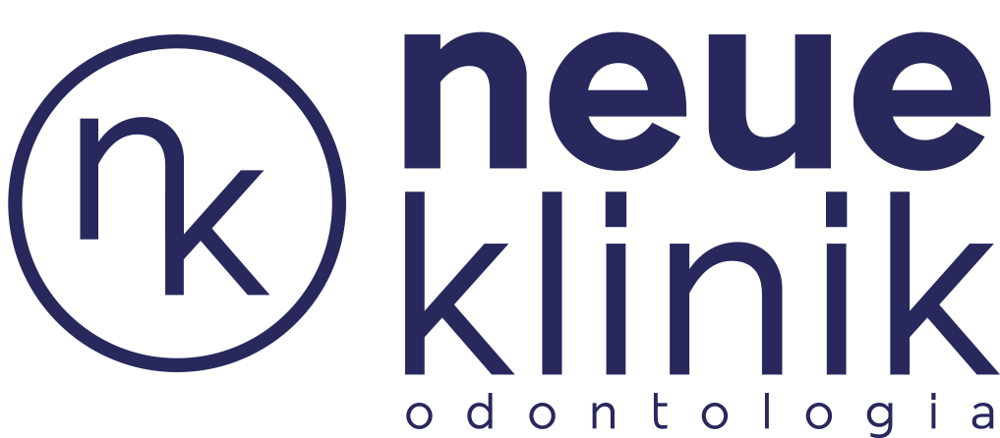

Sobre Nós

A Neue Klinik Odontologia é uma clínica odontológica de vanguarda, que se destaca pela
excelência clínica
e um ambiente de atendimento diferenciado.
Nossas instalações são projetadas para proporcionar um espaço
acolhedor e contemporâneo, onde os pacientes podem sentir-se confortáveis e tranquilos.
Nossa equipe é composta por profissionais altamente qualificados e comprometidos com a saúde bucal dos
pacientes.
Estamos empenhados em oferecer tratamentos odontológicos personalizados, que vão desde a
odontologia preventiva até procedimentos avançados, garantindo que cada paciente receba cuidados adaptados
às suas necessidades individuais.
Na Neue Klinik Odontologia, investimos em tecnologia de ponta para garantir diagnósticos precisos
e tratamentos eficazes. Isso significa que nossos pacientes têm acesso às mais recentes inovações
e abordagens terapêuticas no campo da odontologia.
Nosso compromisso vai além do consultório odontológico. Estabelecemos uma relação de confiança com cada
paciente, ouvindo suas preocupações e respondendo a todas as perguntas. Acreditamos que a educação e a
comunicação são fundamentais para a promoção de uma boa saúde bucal a longo prazo.
Na Neue Klinik Odontologia, sua saúde bucal e seu bem-estar são nossa prioridade número um. Estamos
empenhados em ajudar você a alcançar e manter um sorriso saudável e radiante. Venha nos visitar e descubra
o que torna a Neue Klinik Odontologia a escolha ideal para todos os seus cuidados odontológicos.